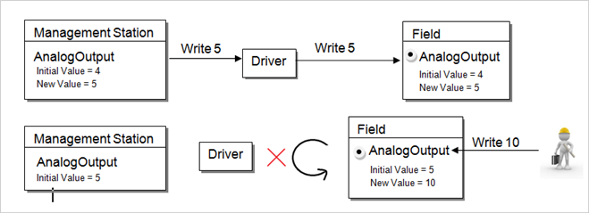
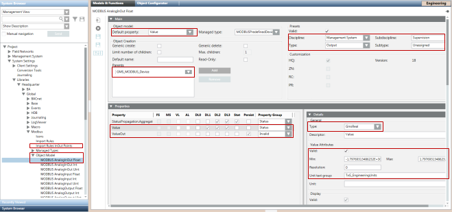
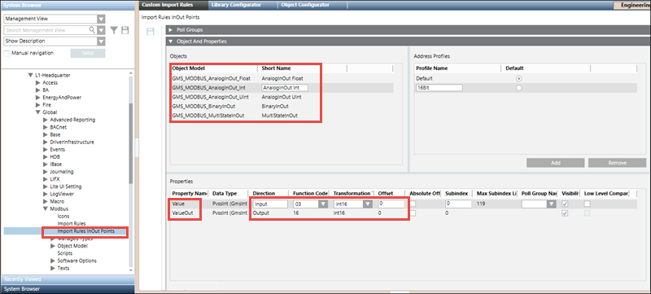
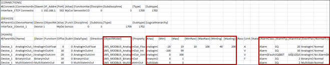
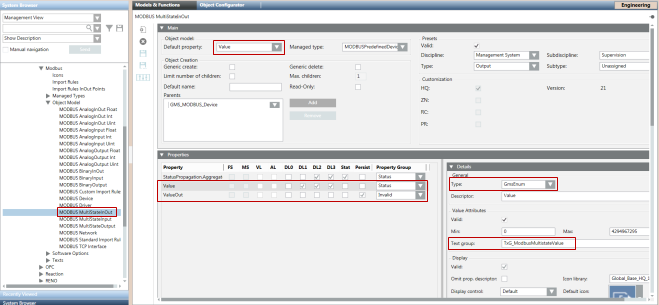
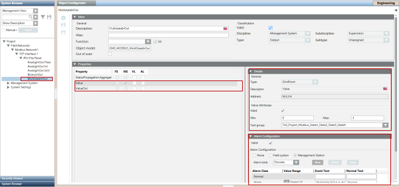
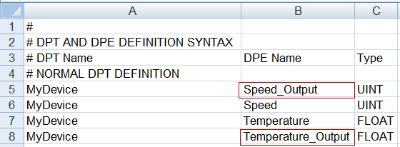
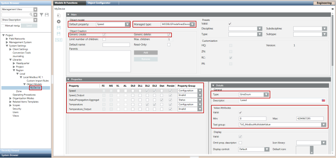
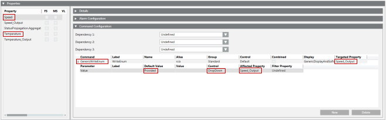

Modbus InOut Object Models
In addition to the standard Modbus object models, a set of custom object models termed as Modbus InOut object models is also present in the standard Modbus library. To illustrate using InOut object models, a CSV file containing the instances of the InOut Object models is present at the following location, GmsMainProject\profiles\ModbusDataTemplate.
The current Modbus driver supports either the IN or Out direction for a point; however, it does not support both the In and Out directions for a single point. This means that if you manually change the value of a point in the field whose direction is Out, the new value will fail to reflect this.
For example, you have an AnalogOutputpoint whose direction is Out. The initial value of this point is 4 and you want to update this value to 5. To do this, in the Operation tab, you would enter 5 into the AnalogOutput field. The Modbus driver physically writes this value to the point.
Next, you want to update the value of this Out point to 10. The new value will not be updated.

To overcome this limitation, there are two properties in the same point. In this way, both the In and the Out point will refer to the same point in the field. The result is that you will see the same value for both the In and the Out point. Only the Value changed from field is updated in the InOut point.
Therefore, the most recent field value of the point (in this case, 10) will be updated to the In point, whereas the Out point will still retain the old value (in this case 4).
The workaround for this situation has been provided in the library for System-defined points in the form of InOut object models. For custom devices and points, a step-by-step approach to create object models with InOut properties has been provided.
System Defined Points
The workaround for system defined points is the form of InOut Object models, which are a part of Modbus Standard Library. There are the following types of object models:
- GMS_MODBUS_AnalogInOut_Float
- GMS_MODBUS_AnalogInOut_Int
- GMS_MODBUS_AnalogInOut_Int64
- GMS_MODBUS_AnalogInOut_Uint
- GMS_MODBUS_AnalogInOut_Uint64
- GMS_MODBUS_BinaryInOut
- GMS_MODBUS_MultiStateInOut

Each of these object models has two properties
- Value - Represents the current value of the point. This functions in the input direction.
- ValueOut - Represents the value that has been sent from the management station to the point. This functions in the output direction.
A separate set of custom Import Rules labeled as Import Rules InOut Pointshas been included to define the two above mentioned properties for each of the five object models.
The following three object models, support both 32Bit as well as 16Bit transformation types
- GMS_MODBUS_AnalogInOut_Int
- GMS_MODBUS_AnalogInOut_Uint
- GMS_MODBUS_MultiStateInOut
For 16-bit transformation type, you must select the 16Bit address profile and for 32Bit you must select the default profile in the Address Profiles section.

These object models and their Import Rules have been pre-configured so that they can be used directly without requiring any re-configuration. For example, the function codes of the Value and ValueOut properties have been set to support reading from and writing to that particular point. However, you can change the attributes (Function Code, Offset, Subindex and so on) of the properties in the custom Import Rules as per your requirements. For more information, see Objects and Properties Expander from the Custom Import Rules section.
Object Models, Address Profiles, and Preconfigured Function Codes of their properties | |||
Type | Function Code for “ValueOut” | Function Code for “Value” | Address Profiles |
GMS_MODBUS_AnalogInOut_Float | 16 | 03 |
|
GMS_MODBUS_AnalogInOut_Int | 16 | 03 |
|
GMS_MODBUS_AnalogInOut_Int64 | 16 | 03 |
|
GMS_MODBUS_AnalogInOut_Uint | 16 | 03 |
|
GMS_MODBUS_AnalogInOut_Uint64 | 16 | 03 |
|
GMS_MODBUS_BinaryInOut | 05 | 01 |
|
GMS_MODBUS_MultiStateInOut | 16 | 03 |
|
CSV Configuration
While configuring the CSV for points of the InOut Object Models, you must mention the object model name or its alias in the ObjectModel column of the point entry. You do not need to specify Function Code, Direction and Data type, since these are directly taken from the Import Rules. The configuration for the remaining CSV fields is similar to that of standard Modbus points.


After the import, the points in the management station display as follows:

Support for Custom Object Models with InOut Properties
To support the functionality of an InOut point for custom object models, you must define a corresponding Output property for an Input property. Therefore, you must modify the object model importer CSV file and mention the Output property as follows.
Example
The object model ‘MyDevice’ is modified to have an additional two Output properties for the corresponding two Input properties.
NOTE:
The first part of the Output property name must be the same as the Input property name. Otherwise, the Importer will fail to set the Text Group on the Output property.

As you can see, ‘Speed_Output’ is an Output property that points to ‘Speed’. ‘Speed’ actually handles the reading of the property from the point, whereas ‘Speed_Output’ internally handles writing values to the property of the point from the management platform.
After importing the Object Model, set the values in the Properties expander in the Models & Functions tab of the ‘MyDevice’ as follows. Note that the DL2 and DL3 of ‘Speed’ and ‘Temperature’, that is the Primary properties, are checked. Set the Managed type. You can also configure other attributes of the property.
If you are configuring an Output property for a GmsEnum or GmsBool type property, you must enable the Valid flag available under the Value Attributes frame in the Details expander for that Output property.

Proceed to the Import Rules to configure the object properties (Function Code & Direction) of MyDevice. You must perform the following steps for Speed:
- Configure the Input property.
- Set the direction of Speed property as Input.
- Select the appropriate Function Code for read operation.
- Enter an Offset and SubIndex. Carefully select these values as these values are replicated in the Output property.
- Configure the Output property.
- Set the direction of Speed_Output as Output.
- Select the appropriate Function Code for write operation.
- Enter the same Offset and SubIndex that you mentioned in the corresponding Input property.
Repeat this procedure for the Temperature property also.
Additionally, you must add the commands configuration for the object model properties. Go to the object model MyDevice. Perform the following steps to add commands for Speed:
- In the Properties expander, under the Models & Functions tab, select Speed.
- In the Command Configuration expander, click New to create a new command.
- In the Command column, from the drop-down, select GenericWriteInt, if Speed is a PvssInt type.
For other data types, select the appropriate command. Example, GenericWriteFloat for PvssFloat/GmsFloat and so on. - In the Targeted Property column, select the name of corresponding Out point (in this case Speed_Output).
- Click +/- to open or close the sublines (parameters) belonging to a command type.
- Select the Value parameter.
- Set the Default Value to ReferCmdDef and set the Affected Property to the name of the affected input property, that is, Speed_Output.
- Repeat Steps 4 through 7 for the remaining properties.
- Save the changes.

Role of Default Property
Among the set of properties of the object model, there is a default property that can be viewed and changed from the object Model and Functions tab.
Since the importer updates the default property of the custom point with attribute values mentioned in the CSV file, the default property must be carefully chosen and its gms data type must be set to GMS*** to allow the importer to update the details from the CSV.
The GMS data type of the output property that corresponds to the default property must be the same. For example, if your default property is 'Speed' and its Data Type is GmsEnum, then the data type of the Output property of 'Speed' must be GmsEnum.
Please note that the custom object models which will be used to represent devices instead of points do not support configuration of default Property using the CSV.
Configuring Statetext through CSV
If the default property of your object model is a GmsEnum or GmsBool type, then you can configure Statetexts for the property using your CSV. The rules for configuring Statetext are the same as they are for Standard Modbus Points.
You have configured the Modbus custom device data model with Out points. You can now create a CSV file for this type of Object Model to import points.

NOTE:
For InOut Object Models, if ValueConversion configuration is being assigned to a Value property, either from the MessageConversion section in the Objects and Properties expander in Custom ImportRules or from N-1 mapping in the CSV file, then the same ValueConversion configuration must be assigned to the corresponding ValueOut property also.